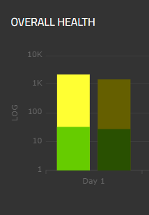

In order to make this sample easy to download and install, all the data for this application is random for each date range. Therefore, as you navigate around the site you will encounter different values even as you select identical date ranges.
ABOUT THE BAR CHART The bar chart uses a logarithmic scale on the Y axis in order to show two sets of data that vary in amounts. Notice how conversions (relatively small numbers in green) are plotted on the chart at the bottom where the scale starts at 1 and increases to 100. The sessions (relatively large numbers in yellow) are plotted at the top of the chart where the scale goes quickly from 1,000 to 10,000. This approach allows two data sets of varying scale to exist in a stacked layout on the chart.